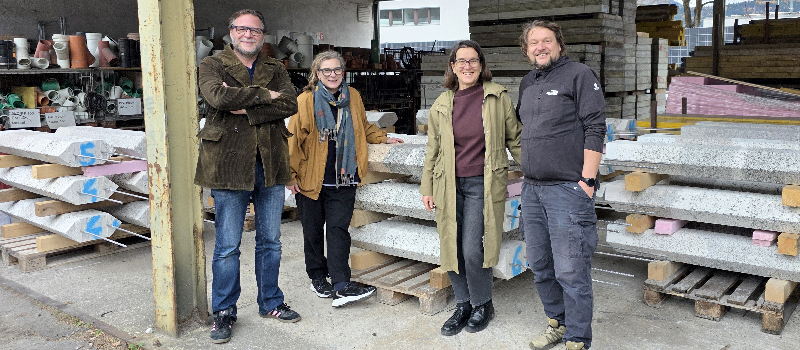

Gespräch über den Gedenkort Reichenau
Im September 2025 stellt die an der Universität Hamburg lehrende Kunsthistorikerin Margit Kern (MK) den vier Mitgliedern der Werkgemeinschaft Gedenkort Reichenau – Heike Bablick (HB), Ricarda Denzer (RD), Karl-Heinz Machat (KHM) und Hermann Zschiegner (HZ) – eine Reihe an Fragen, die sich auf Konzeption und Realisierung des Gedenkorts Reichenau in Bezug auf gegenwärtige Erinnerungskulturen beziehen.1
MK: Was habt ihr wahrgenommen, als ihr den Ort zum ersten Mal besucht habt, an dem der Gedenkort Reichenau liegen soll? Was ist euch aufgefallen, bevor ihr mit dem Entwerfen begonnen habt?
HZ: Der Ort ist für Innsbrucker insofern recht bekannt, als er direkt am Inn liegt, entlang eines Fußwegs und eines Fahrradwegs in Richtung Baggersee. Der Baggersee ist ein Freizeitzentrum, das von der Innsbrucker Bevölkerung gut angenommen wird. Und ich glaube, jeder von uns ist dort schon einmal entlanggegangen. Es ist ein recht schöner Weg mit vielen Geschwindigkeiten: Da ist der Fluss auf der einen Seite, der Fahrradweg und der Gehweg. An dem Ort, der dem Projekt zugeteilt war, entfernen sich diese zwei Wege, die parallel verlaufen, ein wenig voneinander. Dadurch entsteht ein kleiner Park mit sehr vielen Bäumen. Es ist ein recht angenehmer Platz, aber vom eigentlichen Standort des Lagers etwas entfernt. Am Anfang hat das für mich nach einem Kompromiss ausgesehen, aber im Laufe der Arbeit war ich mit dem Ort eigentlich sehr zufrieden.
KHM: Zudem befindet er sich am Rand eines moderneren, nach der ersten Olympischen Winterspielen 1964 entstandenen Gewerbegebiets. Es ist eigentlich eine Restfläche und hat die Ausstrahlung einer Restfläche. Mein erster Eindruck war darum, dass man das Gedenken an den Rand der Stadt schiebt, und ich fand es schwierig zu verstehen, was man überhaupt mit diesem seltsamen Mini-Park-Grünstreifen anfangen soll.
RD: Der Ort hat etwas von einer Passage, es gibt diese verschiedenen Geschwindigkeiten. Aber wenn man sich dort aufhält, sind die Leute, die den Weg benutzen, erstaunlich kommunikativ. Sehr speziell finde ich, dass dieser Ort, wenn man sich dort zu verschiedenen Jahreszeiten aufhält, fast schon kontemplative Qualitäten hat.
HB: Man nimmt die Vögel und die Landschaft wahr, aber zugleich tagsüber auch immer die – sehr laute – Geräuschkulisse: Hinter einem Zaun liegen Gewerbegebäude, die Straße sowie der städtische Bauhof und Recyclinghof, der sich auf dem eigentlichen Areal des Arbeitserziehungslagers befindet. Es ist ein wirklich eigener Ort.
HZ: Zunächst hat mir der Genius Loci gefehlt, wie man ihn zum Beispiel am 9/11-Memorial ganz stark spürt – dieser „Holy Ground". Wir haben dann versucht, das in der Arbeit zum Thema zu machen und dieses Gefühl an dem Ort zu erwecken.
MK: Daran schließt meine nächste Frage an: Es gibt immer weniger Zeitzeugen der NS-Geschichte. Die Reichenau spiegelt das wider – als Geschichtsort, an dem auf den ersten Blick nichts mehr an die Situation in den 1940er Jahren erinnert. Welche Herausforderungen entstehen dadurch und wie reagiert euer Projekt darauf? Welche Rolle spielen Sichtbarkeit und das heute nicht mehr Wahrnehmbare der Geschichte?
KHM: Dieser 250 Meter lange, grüne Streifen bildet eine Peripherie an der Peripherie. Er ist nicht mit Geschichte aufgeladen, denn er entstand im Zuge der Hochwasserverbauung des Inns. Aber der Park an sich verträgt es eigentlich ganz gut, dass man beginnt, ihn zu deuten.
Hermann hat ein Foto gemacht vom ersten Schneefall im Winter: Am Boden entstehen weiße Flecken, die die Bäume zonieren, und das Licht kommt dazu und so weiter. Plötzlich bekommt diese Peripherie der Peripherie, dieser Nicht-Ort ohne Genius Loci eine Eigenständigkeit, die es möglich macht, diesen noch nicht definierten Ort in Beziehung zu setzen mit der untergegangenen Geschichte des Lagers.
HZ: Für mich war der echte Durchbruch, als Heike in unsere Design- und Entwurfsdiskussionen das formale Verweisen zurück auf den Ort einbrachte …
HB: … wobei vorher noch vieles stattfand. Am Beginn standen die Welle, das Ufer, das Anschwemmen. Ricarda hat aus dem Geländemodell herausgelesen, dass der Fluss vorbeifließt und man dort, wo etwas auf dem Grund liegt, an der Oberfläche eine Verwirbelung wahrnimmt. Dieser Gedanke war einer der Startpunkte für die Behandlung dieser Landschaft.
RD: Zur Wettbewerbsausschreibung hatten wir Materialien sowohl von den Historiker:innen als auch von den Archäolog:innen. Speziell mit den Unterlagen der Archäolog:innen – Objekte, Farben, Formen, Splitter und Fragmente – ging für uns eine ganze Welle von Zusammenhängen einher, die uns ohnehin interessieren: das Archiv, das Fragmentarische, das Abwesende und Fehlstellen, die Zwischenräume, Schichtungen, der Bezug zum Fiktionalen – oder auch das Ergänzen oder Interpretieren. Diese Zusammenhänge fanden wir auch deshalb interessant, weil es bei den Archäolog:innen, wenn sie die Erde untersuchen, dieses Sondieren gibt, und das haben wir wiederum mit dem Sounding, den Klangwellen und der Resonanz in Verbindung gebracht. Es geht darum, mit solchen hörenden Recherchemethoden das Nicht-Sichtbare sichtbar zu machen.
MK: Gerade in Bezug auf die Leerstellen habe ich mich gefragt, inwieweit die Archäologie für euch und euren Entwurf nicht nur deshalb zentral ist, weil sie authentische Fundstücke entdeckt, sondern auch als „Denkform". Ihr seht ja vor Ort kein Museum für Fundstücke vor, dennoch sind das Graben und das Sichtbarmachen für euer Projekt von Bedeutung.
HZ: Eine Herausforderung war, dass es kaum Fundstücke gab und man gar nichts zum Herzeigen hat. Selbst das, was man faktisch weiß, ist fragmentiert, zum Beispiel über die – zu dem Zeitpunkt – 114 namentlich bekannten Toten, von denen wir ausgegangen sind. Die Dunkelziffer ist wahrscheinlich höher.
RD: Die Lage des Lagers war schon bekannt. Die historischen und archäologischen Untersuchungen führten aber zu präzisen Erkenntnissen über Arten, Anzahl und Organisation der einzelnen Lager.
KHM: Die Artefakte, die sie dort ausgegraben haben, haben wir vor kurzem bei der Archäologin Barbara Hausmair zum ersten Mal live gesehen. Interessanterweise waren darin unsere beiden Bezugnahmen repräsentiert: zum einen die Methode, die es uns ermöglicht hat, einen Bezug zum Lager über das Sondieren und das An-die-Oberfläche-Bringen herzustellen, zum anderen die Artefakte selbst. Sie waren sehr alltäglich, hatten aber zugleich dadurch, dass es so wenige waren, eine starke Symbolik: ein Bruchstück des Betons, eine weiß glänzende Keramikscherbe, ganz alltägliche Glasscherben, die aber trotzdem das Licht schön brechen und spiegeln. In der Folge haben wir mit den Möglichkeiten dieser Materialien zu spielen begonnen und die Ästhetik dieser Fundstücke für ein Artefakt verwendet, das wir der Landschaft hinzufügen.
RD: Die Materialität des – billig hergestellten – Zements, des Stampfbetons und diese Grobkörnung des Steins, die als Teil des Fundaments von einem der Lager gefunden wurden, haben zum Beispiel meinen Blick auf unsere Namenssteine – die Bohrkerne – verändert.
In Bezug auf die Arbeit am Gedenkort und auf die Bohrkerne hatte ich immer den Begriff „Memorial with the Sound of Its Own Making" – als Referenz auf „Box with the Sound of Its Own Making" von Robert Morris – im Sinn. Wenn es um ausbeuterische Arbeitsverhältnisse geht, wollen wir natürlich auch „klingen lassen", wie wir mit der Entstehung des Gedenkortes und den Materialien umgehen. Es geht auch um einen kritischen Blick auf den Extraktivismus aus der Erde, aus den Materialien, den Archiven und es geht um Arbeit und die (Arbeits-)Zusammenhänge. Es gab immer den Wunsch, das im Prozess mitzudenken.
Wir nehmen mit dem Hydrophon den Klang von den Steinen im Wasser des Inns auf. Mit der Geformtheit der Steine über Jahrhunderte kommen dann auch unterschiedliche Zeitlichkeiten des Ortes ins Spiel.
KHM: Die Namenssteine sind, obwohl individualisiert, nicht homogen. Sie konfigurieren in Wirklichkeit eine Form von Schichtung, was wiederum mit der Methode in der Archäologie zu tun hat, über Schichten zu datieren, ein Narrativ zu finden und Aussagen zu treffen, die über die Materialität gespielt und referenziert werden. Dazu gehört natürlich auch eine Form der Metrik. Es wird vermessen, die Ausgrabungszone wird definiert und es wird ein Gitter gespannt, um sich zurechtzufinden. Neben dem Sounding, bei dem wir über den Schall und andere Wellen, die im Boden reflektiert werden, Erkenntnisse gewinnen, erhalten wir über die Grabung und die Artefakte immer wieder Hinweise, wie wir aus diesen einzelnen archäologischen Methoden zu Erzählungen kommen. Von dem her war die Archäologie ein guter Ausgangspunkt: ein Feld zu definieren und sich dann mit diesem Feld zu beschäftigen.
MK: Eine kritische Frage möchte ich noch stellen, und zwar die zu den Gedenkritualen des Nationalsozialismus, bei denen Erdrituale ebenfalls eine Rolle spielen. Zum Beispiel diente die Erde von Langemarck dazu, den Langemarck-Mythos zu befördern. Die Idee der Bohrkerne, diese archäologische Denkform, finde ich super interessant, weil mir die Beziehung zum Fluss so gut gefällt und weil es auch thematisiert, dass man oberirdisch keine Relikte sehen kann. Aber zugleich habe ich mich gefragt, wie ihr die Einarbeitung von Gesteinen aus den Herkunftsregionen der Todesopfer verortet.
HB: Die Verwendung von Erde und Gestein aus den Herkunftsländern war im ursprünglichen Wettbewerbsprojekt noch vorhanden. Es hatte nichts mit Blut und Boden zu tun, aber wir wollten den Menschen einen Teil ihrer Identität zurückgeben, dass sie von einem bestimmten Ort kamen und eine Geschichte hatten.
Das Thema der Erdrituale ist nicht nur dir aufgefallen, sondern es wurde auch in der Diskussion des Projekts im Wettbewerb angesprochen – und wir haben es aufgenommen. Darum haben die Steine jetzt nichts mehr damit zu tun, wo die Person herkam. Es ist wichtig, dass sie unterschiedlich sind, um jedem einzelnen Namensstein seinen Charakter zu geben, aber es gibt keinen Bezug mehr zu einer bestimmten Erde aus einem bestimmten Land.
KHM: Ich sehe da wenig Problematik mit einer Referenz zur Blut-und-Boden-Ideologie. Sondern stelle eher die Frage, was macht individuelles Sein aus? Und diese Referenzen in den unterschiedlichen Materialien, in diesen unterschiedlichen Schichtungen, in unterschiedlichen Höhen und Tiefen, lassen eine Lesart zu, die sehr allgemein ist: als Sedimente des Seins. Aber ganz anders als diese Nazipropaganda, die ja eher von oben nach unten geht: Also die Erde als Scholle und nicht von unten nach oben, als archäologische Schichtung.
HZ: Die viel schwierigere Frage für mich war die der Namen, weil deren Schreibweise auch wiederum nur ein Artefakt aus der Zeit ist. Erstens haben alle jüdischen Verstorbenen einen hebräischen Zusatznamen bekommen: die Männer Israel, die Frauen Sarah. Zweitens wurden sehr viele slawische Namen einfach irgendwie aufgeschrieben – so wie sie jemand gehört hat. Das sind Artefakte, die verfärbt sind durch das Regime, und diese Faschismen darf man natürlich nicht wiederholen.
HB: Mit dem Historiker Horst Schreiber haben wir wohl den kompetentesten Ansprechpartner, den man im Zusammenhang damit derzeit finden kann, weil er wirklich in allen möglichen Archiven versucht hat, mehr Daten zu den einzelnen Opfern zu finden. Wir haben gutes Material. Trotzdem wird man aus Mangel an Quellen die ganz exakte Schreibweise eines Namens vielleicht nicht immer treffen. Aber falls sich etwas Neues ergibt, kann man einen Stein auch neu schleifen und neu inskribieren.
RD: Deswegen ist das auch kein abgeschlossener Ort. Wir haben den Leiter des Gemeindemuseums Absam Matthias Breit gefragt, für wen dieser Gedenkort seiner Meinung nach ist. Für ihn ist es wichtig, dass die Menschen, in deren Familien es Opfer gab, einen Ort haben, den sie besuchen können. Die Schulen sind ihm weniger wichtig. Für Horst Schreiber, der auch Lehrer ist, kommt es hingegen gerade darauf an, mit den Schüler:innen dort hinzugehen. Die richtige Schreibweise eines Namens kann von den Familien oder Angehörigen kommen. Aber es ist wichtig zu verstehen, warum zum Beispiel plötzlich so viele Italiener unter den Opfern waren und was das mit der Geschichte zu tun hat. Diese politischen Zusammenhänge kann man auf der Website nachlesen.
KHM: Dazu noch zwei Fußnoten: Die Namenssteine haben eine bestimmte Neigung, die sie vor Ort erhalten. Und bezüglich der Didaktik wollten wir, dass das Lehrlingsproject Teil der Ausschreibung für die ausführenden Firmen ist. Lehrlinge sollten in das sehr kunsthandwerkliche Gießen der Namenssteine eingebunden werden und es sollte die Möglichkeit geben, das auch zu erklären.
MK: An die Auffindung des Lagers, der Baracken, die Ricarda erwähnt hat, würde ich gerne mit einer Frage anschließen: Die Lagerarchitektur ist eine Architekturform der Moderne, die Funktionalität und Ordnung verkörpert, aber vor allem zur Ausübung von Gewalt genutzt wurde. Diese Geometrie der Moderne ist dem Ort eingeschrieben. Spielen die Baracken, die man heute nicht mehr sehen kann, bei eurem Entwurf eine Rolle und welche Narrative hängen damit zusammen?
HB: Die Baracken des Reichsarbeitsdiensts, die sogenannten RAD-Baracken, hatten ein relativ standardisiertes Format: acht Meter breit, 40 Meter lang. Es gab halbe Baracken, ganze Baracken und aneinander angeschlossene Baracken. Wir hatten den Grundriss des Lagers und wussten, wo diese Baracken gestanden sind. Auch wenn nichts mehr davon zu sehen ist, hat man eine gewisse räumliche Vorstellung davon. An dem Gedenkort gibt es einen Pavillon als Informationsort, und die Geometrie der Baracken wird im Dach des Pavillons sichtbar. Das ist weniger absichtsvoll, als es vielleicht klingt, sondern es ist eine Größenordnung, die die ganze Zeit mitgeschwungen hat.
KHM: Vielleicht ist damit auch der Verweis darauf möglich, wie viele Menschen in so einem Rechteck eingepfercht waren. Zur Thematik der Moderne ist noch zu sagen: Die Baracken waren eher das Minimale, das möglich war, damit Menschen überhaupt überleben konnten. Ich würde das mit dem modernen Gedanken nicht in Verbindung bringen wollen, sondern eher mit einer sehr entmenschlichten Form der Zwingerhaltung.
RD: Darum gab es bei mir auch diesen Moment der Irritation in Bezug auf die Nachnutzung – nach der Heeresentlassungsstelle und dem Entnazifizierungslager – als Notwohnsiedlung. Die Menschen, die dort gelebt haben, haben Gärten angelegt, der Alltag ist eingekehrt und das Leben hatte durchaus eine sehr spezielle Qualität. Die Fotos der Menschen in dieser Siedlung erinnern an Fotos, die auch wir von unseren Eltern vielleicht hatten, nur eben mit diesen Baracken.
HZ: Was ich schon interessant finde, ist, dass wir als Arbeitsgruppe, die wir ja fast alle Backgrounds in der Architektur haben oder in der Kunst, uns zumindest an einem Punkt ganz natürlicherweise auf einmal um diese Barackenarchitektur gekümmert haben. Es scheint zunächst einfacher, über diese Dinge nachzudenken, wenn man anfängt, sie anhand von Typologien zu verstehen. Aber irgendwann habe ich mich ganz stark vom Motiv der Baracke verabschiedet, denn eigentlich bringt es uns die Schrecken der Lager nicht näher.
KHM: In Bezug auf das Pavillondach hat die „halbe Baracke" nur die Funktion, diesen sehr indirekten Verweis zu bieten – als fast schon illusionistische Architektur. Die Baracke als Dach bildet den Rahmen für die Narrative, die darunter erzählt werden: über Menschen und so weiter. Das Gleiche gilt für die Glasfelder im Dach, die sich aus den Scherbenfunden entwickelt haben. Aber in Bezug auf das Lager und die besonderen Grausamkeiten spielt das Motiv der Baracke eine Nebenrolle. Dieses Wiederauferstehen von Dingen wäre ein falsches Zeichen gewesen.
MK: Welche Körpersinne wollt ihr adressieren? Was hat es mit dem HörWeg und dem akustischen Fluss auf sich? Wie ist das Verhältnis zwischen Hören und Sehen in eurem Projekt und warum ist auch das Fühlen wichtig?
HZ: Ich glaube, hier gilt: vier Leute, vier Antworten. Für mich war immer das Gehen das Wichtigste. Dieses „Geh-Denken". Das ist vielleicht zu viel Wortwitz, aber dieses Nachdenken im Gehen spielt für mich eine große Rolle.
RD: Deine erste Frage, Margit, war ja: Was habt ihr wahrgenommen? Was ist euch aufgefallen? Und ich denke, der zentrale Punkt ist, überhaupt einmal die Menschen aufzufordern, ihre Sinne einzusetzen. Natürlich habe ich meine ganz eigene Geschichte zu einem hörenden Zugang als Formfindung, weil das Teil meiner Arbeitspraxis ist. Deswegen ist natürlich diese ganze Arbeit für mich auch eine akustische Annäherung. Ich nähere mich Orten gerne hörend an. Ich verbringe Zeit dort und fange an, mit den Menschen zu sprechen. Wie Heike und Hermann vorhergesagt haben: Es gibt diese Anwesenheit von Sound zum Beispiel vom Recyclinghof, auch wenn man ihn nicht sieht.
Ganz praktisch gesehen ist es eine Möglichkeit, einen Ort zu vermitteln, wo nichts mehr anwesend ist. Wir schaffen zusätzlich etwas auf einer akustischen Ebene. Es wird nur lokal über Kopfhörer zu hören sein und es ist eine Möglichkeit, erzählte Geschichte im Gegensatz zu historischen Facts ins Spiel zu bringen, auch die Brüchigkeit, die Lücken und Fragmente. Über die Stimmen und den Klang der Materialien kommen auch Körper ins Spiel und eine Form von Sinnlichkeit.
KHM: Es gehen dort viele Leute spazieren. Man geht und denkt nach, aber man spricht auch miteinander. Man erfährt dort einiges. Das Geschichtenaustauschen war an diesem Ort schon vorher Tradition. Und gleichzeitig hört man die Flugzeuge, die Eisenbahn und die Straßenbahn, den Fernverkehr, die Hochspannungsleitung und den Fluss. Es ist ein unglaublich reicher Ort, was Töne, Klänge und Erzählungen betrifft.
HB: Es gibt diese zwei Wege: einen schnellen für die Fahrräder und den Gehweg für die langsame Geschwindigkeit. Dazwischen liegt der Grünstreifen, der auch begangen wird. Man spürt diese unterschiedlichen Untergründe. Diese Haptik haben wir ins Projekt mit aufgenommen, weil wir unterschiedliche Oberflächen produzieren wollen: festere und durchbrochene, die dann auslaufen ins Grüne. Das hatte auch ganz pragmatische Gründe, weil wir den Ort allen barrierefrei zugänglich machen wollten. Darum haben wir noch intensiver darüber nachgedacht, wie Oberflächen gestaltet werden können. Wir haben den Oberflächen auch Materialien zugeordnet und wissen, dass das so funktionieren wird.
KHM: Wir hoffen auch, dass dadurch, dass manche Dinge mit Brailleschrift versehen sein werden, die Hemmschwelle sinkt, die Namenssteine anzugreifen. Natürlich wird die Repräsentation durch die Namen einen gewissen Respekt vom Gegenüber einfordern, aber zugleich sind diese Steine nahbar. Die Haptik dehnen wir auch auf die Strahlen aus, die das Gebiet strukturieren – ein wenig Holpern für den Radweg, eine vor allem visuelle Änderung auf dem Gehweg, ähnlich den Leitsystemen für Sehbehinderte.
RD: Die Bodenstruktur gibt ein anderes Tempo vor. Der Arbeitstitel des HörWegs „Ein Weg ist ein Weg" ist ein Zitat aus dem Gedicht Ökoschotter von Ann Cotten, in dem sie sich auch mit dem Motiv des Pflastersteins, Steins und Schotterwegs beschäftigt und damit, aus Überresten und Bruchstücken einen gangbaren Weg zu machen. Sie spricht in diesem Zusammenhang auch davon, dass es etwas Utopisches hat, wenn das Tempo geändert wird.
HZ: Es war uns als Gruppe von Anfang an sehr wichtig, diesen Ort – wenn man städtebaulich denkt – nicht einzugrenzen, nicht zu sagen: „Hier wird jetzt nachgedacht!", sondern ihn wirklich als Ort für die Stadt zu erhalten. Selbst wenn man nur zum Baggersee geht oder mit dem Fahrrad vorbeifährt, kann man den Ort mit allen Sinnen wahrnehmen. Man kann diese Dinge angreifen, verweilen, hören – oder einfach nur durchgehen.
RD: Das Fahrrad ruckelt halt ein bisschen, wenn man vorbeifährt.
MK: Ich habe noch eine Frage zur Zeit, weil ich auch den Zeitaspekt im Fluss so interessant fand, der sich verändert. Wie soll Zeit erfahrbar gemacht werden und welche Rolle spielt sie für das Projekt?
RD: Hermann hat etwas Interessantes angesprochen, nämlich: Wann wurde der erste Gedenkstein aufgestellt? Ab wann wird gedacht? Wann wird die erste Intervention gesetzt? Und wann kommen die Nächsten, die sagen: „Jetzt brauchen wir etwas Neues?" Erinnerungskultur ist ein Prozess mit verschiedenen Zeitlichkeiten. Der erste Gedenkstein wurde 1972 gesetzt. Jetzt sind es 80 Jahre seit der Befreiung – ein Lebensalter.
Es gibt auch andere relevante erfahrbare Zeiten: Fünf Monate dauerte meistens die Haft in dem Lager. Das Lager hat von 1941 bis 1945 existiert. Nach dem Krieg waren ein Jahr lang die Franzosen dort und so weiter. Auch die Aufstellung der Namenssteine soll einer zeitlichen Organisation folgen.
HZ: Im Endeffekt geht es um die Visualisierung der vorhandenen Daten. Zu Beginn haben wir versucht, alle möglichen Verteilungsalgorithmen oder Methoden zu entwickeln, um auf diesem langen und schmalen und damit schwierigen Grundstück die Steine zu platzieren. Der Durchbruch kam, als wir das Grundstück an sich als Zeitstrahl verstanden haben, und nun können wird die Namenssteine entlang dieses Zeitstrahls platzieren.
HB: Eine Anforderung im Wettbewerb war, dass man jedes Einzelnen der damals 114 namentlich bekannten Todesopfer gedenkt. Wir wollten nicht einfach eine Liste von Namen gestalten, sondern es sollte jede Person, die dort zu Tode gekommen ist, repräsentiert sein. Eine Form dafür zu finden, war schwierig. Die Namenssteine wurden als eine Art archäologischer Artefakte entwickelt.
HZ: Nachdem wir uns entschlossen hatten, die Namenssteine nach den Todesdaten zu platzieren, wurde auf dem Plan ganz klar, dass in den Wintermonaten natürlich viel mehr verstorben sind – einfach weil sie erfroren sind. Oder dass es ganze Gruppen gibt – wie eine Gruppe von Sträflingen, die hingerichtet wurden, weil sie bei einem Außeneinsatz ein Marmeladenglas gestohlen hatten. In diesem Park, in dieser Landschaft stehen sie jetzt wieder zusammen.
MK: Mit welchen Quellen habt ihr gearbeitet? Wie leicht oder schwierig war es überhaupt, Zeugnisse von diesen Menschen zu finden? Und wie seid ihr mit der Herausforderung umgegangen, einerseits individuelle Lebensgeschichten in das Projekt zu integrieren und andererseits erfahrbar zu machen, dass es sehr viele sind?
HB: Im Vorfeld des Wettbewerbs hat die Stadt Innsbruck dazu eine Studie2 in Auftrag gegeben, die 2022 fertiggestellt wurde und die den Wettbewerbsteams zur Verfügung stand. Die Historikerin Sabine Pitscheider und der Historiker Horst Schreiber haben dafür mit großem Aufwand Namen und biografische Daten der Getöteten recherchiert und die Geschichte des Lagers nachgezeichnet. Aus Krankenakten und Todesfeststellungen konnten die Namen – bei den meisten auch Geburts- und Todesdatum und eine Todesursache – von zunächst 114 Personen rekonstruiert werden. Von den anderen circa 8.500 Menschen, die durch dieses Lager im Zeitraum seines Bestehens gegangen sind, kennt man größtenteils weder Namen noch Herkunftsorte. Man weiß nur, welche Leute grundsätzlich dort interniert waren. Aber Individuen sind praktisch unbekannt, weil die Häftlinge bei ihrem Eintritt eine Nummer erhalten haben, während ihr Name sozusagen ausgelöscht wurde. Die vielen Namenlosen sind im Projekt über diese Bodenelemente repräsentiert. So wollen wir zeigen, dass es abgesehen von den 115 getöteten Menschen sehr, sehr viele gab, die durch das Lager gegangen sind und diese Grausamkeit erlebt haben.
RD: Wir haben aber nicht für jeden dieser über 8.000 Menschen eine Bodenplatte gemacht, sondern wollten eine Struktur schaffen in der gleichen Größe wie die Oberfläche der Namenssteine. Diese Kachelung zieht sich über die Topografie.
KHM: Die Möglichkeit der Interpretation ergibt sich wieder über die Methodik der Archäologie. Auch die Platzierung der Namenssteine hat etwas von einem Diagramm. Es gibt die Zonierungen, es gibt das Feld und diese vielen Elemente. Dann gibt es – über Größe und Schichtung – sehr individualisierte Elemente, die auch einen Namen bekommen. Und es gibt diese Zeitstrahlen, die durchgehen. Man kann herauslesen, dass es bestimmte Gruppen gab oder im Winter mehr Häftlinge gestorben sind als im Sommer, muss es aber nicht. Wir haben uns die Freiheit genommen, das nicht allzu sehr mit Symbolik aufzuladen. Es gibt einen Gestaltungsrahmen, der sich über die ganze Länge wie ein flacher Fischbauch durchzieht. Es gibt gewissermaßen ein Repertoire, auf das wir zurückgreifen können.
Die Hauptrolle spielt die Ordnung, die das Lager dargestellt hat: Die Krankenakten und die Todesfeststellungen mit den Namen sind Teil der Struktur, die zu den Namen auf den Namenssteinen führt.
RD: Dadurch, dass es auch Informationen beim Pavillon und auf der Website gibt, muss man diese Verbindungen auch nicht so auserzählen. Aber im Entscheidungsprozess waren all diese Überlegungen und Dinge, die wir hier einbringen, wichtig.
HZ: Ich möchte noch einmal auf deine Frage zurückkommen, Margit, wie wir mit den Individuen umgehen. Man muss dazu betonen, dass die Stadt ihre Aufgabe erfüllt und die Historiker Sabine Pitscheider und Horst Schreiber beauftragt hat, über diese Personen mehr herauszufinden als den Namen. Da entsteht auch im Moment noch sehr viel. Wer weiß, wie hoch die Dunkelziffer ist und wie viele – über die 115 namentlich bekannten hinaus – tatsächlich verstorben sind?
MK: Welche Zeitschichten rekonstruiert und adressiert ihr in diesem Projekt? Die Baracken spiegeln paradigmatisch die Verwerfungen der Geschichte des 20. Jahrhunderts wider – Vertreibungen, Gewaltherrschaft, Zwangsarbeit – und dann auch die Nachnutzungen. Viele der Lagerarchitekturen gingen in Kleingartensiedlungen auf. Also diese Kontinuitäten, die diese Lagerarchitekturen an verschiedensten Orten haben, die werfen ja auch die Frage auf, welche Zeitschichten kann man rekonstruieren, soll man rekonstruieren?
HZ: Dazu gibt es eine recht pragmatische Antwort: Natürlich liegt das Hauptaugenmerk auf der Nutzung als Arbeitserziehungslager. Das Erinnern an die Individuen beschränkt sich auf diesen Zeitraum. Aber es gibt auch den vorher erwähnten Pavillon, wo wir auch Aufklärungsarbeit über die Nachnutzung leisten wollen.
Die Erinnerung der Bevölkerung ist verschwommen. Selbst meine Mutter hat gesagt, sie sei als kleines Kind mit ihrer Mama hingegangen, um die Gefangenen zu besuchen. Und auf meinen Einwand, dass sich das zeitlich nicht ausgeht, ist ihr eingefallen, dass das nach dem Krieg war, als die Alliierten das Lager kurzzeitig als Entnazifizierungslager verwendet haben.
RD: Da kommt die erzählte Geschichte ins Spiel, weil sie etwas Fiktionalisierendes hat, weil sie sich im Weitererzählen verändert, adaptiert wird, brüchig ist, fehlerhaft ist und so weiter.
HZ: Auch die Nachnutzung ist mehreren Innsbrucker:innen noch in Erinnerung, das ging ja bis in die 1960er Jahre. Dazu gibt es im Moment im Stadtarchiv/Stadtmuseum eine ganz tolle Ausstellung über prekäres Wohnen3 und diese Strukturen, die nach dem Krieg weiterverwendet wurden.
KHM: Ich möchte noch einmal auf das Geräusch der rollenden Flusssteine eingehen. Dadurch, dass wir auch innerhalb dieses Fischbauchs die Welle als Topografie mit hineinnehmen, kommt etwas davon ins Spiel, wie der Fluss vorher war: bevor dort der Flugplatz war, das Olympische Dorf, das Gewerbegebiet und dazwischen die Gefangenenlager und die Kriegsgefangenenlager. Es gibt auch in diesen Elementen unterschiedliche Zeitskalen, die wir einbinden. Das hat auch damit zu tun, dass zum einen wenig authentisches Material da ist, das direkt für die Repräsentation der Lagerzeit dienen könnte. Zum anderen haben wir keine authentischen Orte oder persönlichen Gebrauchsgegenstände wie Schuhe oder Kleidung zur Verfügung.
Und selbst wenn etwas da gewesen wäre, hätten wir uns eher an Ruth Klüger gehalten, keinen KZ-Kitsch inszenieren zu wollen. Insofern fängt es vor der Zeit des Lagers an und spannt sich bis in die Zeit nach der Abtragung des Lagers. Es sollte vor Ort spürbar sein, wird aber auch auf der Website weitererzählt.
RD: Für uns war neben den Materialien der Historiker:innen auch der Film Das Gestapo-Lager Innsbruck-Reichenau von Johannes Breit sehr wichtig, der Zeitzeugen aus verschiedenen Ländern interviewt hat, die im Lager inhaftiert waren. Er hat im rechten Moment noch diese Menschen befragt, und daraus habe ich ganz viel an Eindrücken mitgenommen: das Klackern der Holzschuhe, das verhinderte, dass sie weglaufen konnten, oder ihre Präsenz im Ortsbild. Die Zwangsarbeiter waren anwesend, sie waren physisch, visuell im Stadtbild da. Solche Dinge habe ich durch diesen Film und durch die Erzählungen der Menschen erfahren.
KHM: Dabei ist die Frage der zeitlichen Einordnung nicht uninteressant. Johannes Breit ist der Enkel des Komponisten Bert Breit, der im Gestapolager interniert war. Es hat bis 2009 gedauert, bis sein Enkel diesen Film mit den Zeitzeugen gemacht hat, auf seine eigene private Initiative hin, bevor die Zeitzeugen sterben. Und dann hat es noch einmal circa 10 Jahre gedauert, bis die Stadt Innsbruck sich dazu entschieden hat, den Gedenkort einzurichten. Die private Aufarbeitung dieser Zeit läuft schon seit 80 Jahren und es dauert sehr lang, bis sich die Gesellschaft dazu entschließen kann, auf diesen Zug aufzuspringen.
RD: Es passiert ja sehr häufig, dass die Initiative auf die Menschen zurückgeht, die ohnehin Opfer des Regimes waren und von außen kommen.
MK: Zur späten Reaktion habe ich noch eine Frage: Arbeit ist eine ganz zentrale Größe in der Geschichte des Lagers. Wie schlägt sich die im Entwurf nieder? Es ist aus meiner Sicht schockierend, wie spät die Aufarbeitung der Geschichte der Zwangsarbeit insgesamt in Deutschland und in Österreich erfolgt ist. 2000 wurde der sogenannte Versöhnungsfonds in Österreich eingerichtet, seit 2005 werden Zahlungen geleistet. Welche Rolle spielt der Aspekt der Arbeit für euch im Projekt?
RD: Natürlich wollen wir in der Umsetzung und in dieser Auseinandersetzung mit diesem Thema nicht ausbeuterisch vorgehen, auch was die Arbeitskraft, die Materialien und die Erde und die Natur betrifft. Es war uns zum Beispiel auch wichtig, dass den Lehrlingen der Firmen, die an dem Projekt arbeiten, auch vermittelt wird, worum es beim Gedenkort zum Arbeitserziehungslager Reichenau geht.
HZ: In der Studie über das Arbeitserziehungslager, die Sabine Pitscheider im Auftrag der Stadt durchgeführt hat, gibt es auch ein Kapitel darüber, wer diese Arbeiter hatte und was sie in Innsbruck gemacht haben. Es wird in Kürze auch ein Buch dazu erscheinen4, und so kommen diese Dinge langsam wieder ins Bewusstsein der Innsbrucker Bevölkerung zurück.
Die Historiker machen da auch keine Schuldzuweisung. Denn die einzelnen Innsbrucker Betriebe konnten gar nicht selbst Arbeiter einstellen, sondern die Gauleitung teilte ihnen Arbeiter zu. Trotzdem lesen sich diese Listen noch heute wie das „Who's who" der Innsbrucker Bauwirtschaft, Landwirtschaft und Gastwirtschaft. Es betrifft einen Großteil der Infrastrukturen wie Energie und Verkehr. Die Geschichte des Lagers ist damit zu einem großen Teil die Geschichte von Innsbruck.
Es gibt also schon einen Auftrag an diesen Gedenkort – den der Pavillon und die Website übernehmen sollen –, diese neu entdeckten Dinge klar darzustellen. Auch wenn es schwierig ist, weil viele dieser Betriebe noch existieren, muss man ins Gedächtnis zurückbringen, dass die Nutzer dieser Zwangsarbeit natürlich die Betriebe in der Stadt Innsbruck waren.
KHM: Sabine Pitscheider hat Statistiken und Karten aus der NS-Zeit ausgehoben. Aus diesen Dokumenten kann man schließen, wie unglaublich komplex dieses System war, in dem das Arbeitsamt immer zwischen Betrieben und Lagern dazwischengeschaltet war. So komplexe Zusammenhänge lassen sich – abgesehen von einer guten textlichen Fassung – natürlich auch gut visualisieren. Das soll ein Teil der virtuellen Präsentation des Gedenkorts werden.
Eine Geschichte, die wir in das Projekt aufnehmen, ist die Tatsache, dass der Weg vom Lager in die Innenstadt, wo diese Arbeiter dann eingesetzt wurden, entlang einer jetzt noch bestehenden Straße und der Straßenbahnlinie verlief. In der Nähe lag auch das Arbeitsamt. Darum versuchen wir zusammen mit den Innsbrucker Verkehrsbetrieben an der Straßenbahnlinie darauf Bezug zu nehmen – insbesondere an der Endstation, zu der Schüler:innen kommen werden, um den Gedenkort zu besuchen.
RD: Im Prozess der Arbeit am HörWeg haben wir die gesamte Liste der Arbeitslager in ganz Österreich vertont. Nur den Namen und den Ort aufzulisten, ergab ein Tonstück von acht Stunden. Das zeigt die Dimension dieser flächig verteilten Arbeitslager. Ebenso erstaunlich ist, dass die Zwangsarbeiter im ganzen Land eingesetzt waren, um Straßen und Tunnels zu bauen, und dass diese Infrastruktur nach dem Krieg bis heute nahtlos weiterbenutzt wurde. Der Wiederaufbau nach dem Krieg hat also eigentlich schon während des Kriegs in dieser Zwangsarbeit stattgefunden.
MK: Wie bezieht ihr die Vegetation des Orts in die Gestaltung ein? Welche Rolle spielt das Grün in eurem Entwurf?
HZ: Die Verschränkung der Intervention dieser Bodensteine mit der Vegetation war uns von Anfang an sehr wichtig. Für mich als Gestalter, als Architekt, war es immer ein tolles Leitbild, dass es zwischen dem Gebauten und dem Bewachsenen einen fließenden Übergang gibt.
HB: Genau. Wir haben bereits im Wettbewerb einen Plan des Ausschreibungsgebiets mit den ungefähren Positionen der Bäume bekommen und haben diese berücksichtigt. Für die Phase der Realisierung wurden die Bäume neu vermessen und die Planung entsprechend angepasst, auch weil die Bäume mehr Platz brauchen und vorsichtiger behandelt werden müssen. Der Erhalt der Bäume bedeutet einen gewissen Aufwand, aber sie sind an diesem Ort eben auch sehr wichtig.
KHM: Wir sind als städtisches Projekt erfreulicherweise bei den Grünanlagen eingeschlichtet. Das hat uns von Anfang an sehr gefreut. Aus meiner Mitarbeit am ARCH+-Kooperationsprojekt zum Thema „Cohabitation" weiß ich, dass es in der Praxis dafür große Hürden gibt. Regularien und Entscheidungsprozesse sind überhaupt nicht darauf ausgerichtet, Tier- und Pflanzenrechte zu integrieren. In Innsbruck hatten wir mit Markus Pinter von den Innsbrucker Grünanlagen ein Gegenüber, das von Anfang an sehr kompromisslos war und keinen seiner Bäume opfern wollte.
Es war ganz klar, dass wir unsere Steine woanders hinstellen müssen, der Radweg verlegt werden muss und wir mit dem Bestand umgehen müssen, was uns auch sehr recht war. Denn dort ist jeder einzelne Baum eigentlich selbst ein zeitlicher Verweis auf „alt", auf „Zeuge", auf etwas, was immer schon da ist. Der jahreszeitliche Wechsel hat einen unglaublich guten Rahmen gegeben. Wir haben uns zwar über die Bepflanzung des Gedenkorts mit Blumen und ruderalem Bewuchs Gedanken gemacht, aber der Baumbestand ist schon sehr schön angelegt und bildet den Rahmen.
RD: Wir gehen auch nicht von der Natur als Gegensatz zur gewaltvollen Geschichte aus, denn die Kultur und die Geschichte sind ohnehin in jede Natur in der Stadt eingeschrieben. Was mir speziell gutgetan hat, war, mit dem Mikrofon vor Ort Field Recordings zu machen und die Gesamtheit der Klänge inklusive unserer eigenen Präsenz aufzunehmen: unsere Schritte, das Geräusch des Wassers, der Steine, der Vögel und die Industriegeräusche. Da kommen wieder die Sinne ins Spiel.
MK: Mich beschäftigt noch die Frage der Nutzung. Das Holocaust-Mahnmal in Berlin ist zu einem Publikumsmagneten geworden – mit allen Licht- und Schattenseiten. Häufig wird beklagt, dass der Ort durch die sozialen Medien weit verbreitet wird und das Verhalten der Besucher:innen nicht der Würde des Ortes entspricht – etwa wenn die Menschen von Stele zu Stele springen oder Faxen machen. Der Nürnberger Kulturdezernent Hermann Glaser sprach hingegen auf dem Reichsparteitagsgelände in Nürnberg davon, dass das Triviale an diesem Ort zu fördern ist, um die sogenannte Banalität des Bösen aufzudecken. Wie verhält man sich zu möglichen Nutzungen vor Ort am Gedenkort Reichenau? Wie stellt ihr euch eine Aneignung des Orts vor? Welche Angebote macht ihr da? Habt ihr euch über das Freizeitverhalten der Besucher:innen Gedanken gemacht? Wie fließen soziale Medien und die Angebote für ein junges Publikum mit ein?
KHM: Was das ganz triviale Freizeitverhalten betrifft – dass man dort joggen geht oder mit dem Rad vorbeifährt –, das kann in dieser Form von Gedenkort ganz gut integriert werden. Dass man en passant eingeladen wird, daran zu denken oder auch nicht, funktioniert nicht schlecht. Was die Respektlosigkeit betrifft: Aus bautechnischen Gründen haben wir Anfang Mai schon drei Namenssteine versetzt. Dass es noch kein Sprayen und keinen sonstigen Vandalismus gab, stimmt uns optimistisch. Ich denke auch, dass sich die Leute nicht dazu eingeladen fühlen werden, auf dem Gedenkort Fußball zu spielen. Durch die Änderung, die wir vornehmen, wird er sehr spezifisch gekennzeichnet sein. Er wird nicht sehr respekteinflößend sein, aber für eine andere Nutzung doch eher exklusiv.
RD: Das verweist auch ganz unabhängig von Gedenkorten zurück in die Schulen und in den Geschichtsunterricht: Wandeln sich die Formen von Gedenken und Erinnern in unserer Zeit und verändert sich dadurch auch der Geschichtsunterricht? Was bedeuten diese Orte in einer Migrationsgesellschaft? Auf diese vielfältigen Möglichkeiten Bezug zu nehmen und nicht nur auf eine einzige, ist für uns wesentlich.
HZ: Wir haben ja auch einen Bildungsauftrag. Bereits im Wettbewerb war vorgegeben, dass man sich über ein didaktisches Konzept für den Gedenkort und den Pavillon Gedanken macht.
Einige der Fragen, die sich in diesem Zusammenhang stellen, haben wir schon beantwortet. Wir hoffen auch, im Entwurf so offen zu sein, dass der Ort und die Artefakte, die wir kreieren, viele Lesarten erlauben. Das ist das Spannendste an diesen Orten. Darum finde ich auch das Denkmal von Peter Eisenman in Berlin gut. Dadurch, dass es keine konkrete Aussage trifft, ergeht der Auftrag an den Betrachter, sich eine Antwort zu geben.
KHM: Das Mahnmal in Berlin hat zudem den Vorteil, dass es sehr monumental ist. Einzelne Interventionen – wenn jemand zum Beispiel von einem Stein zum anderen springt – tun dem Memorial nichts. Hier in Innsbruck helfen die 250 Meter Länge: Wir können durch die Fläche einerseits großzügig sein mit den Interpretationen und sie lässt andererseits eine Einzelintervention im Verhältnis unbedeutend erscheinen.
RD: Ein Gedenkort scheint auch dann gelungen, wenn sich die Menschen dazu verhalten und in Beziehung setzen. Das kann verschiedene Formen annehmen. Manche erzählen, andere legen Blumen nieder oder einen Stein. Sie positionieren sich.
MK: Das bringt mich zum Begriff des lebendigen Erinnerns, den ihr in euren Texten verwendet. Wie kann es aus eurer Sicht heute gelingen? Was verbindet ihr mit diesem Begriff? Warum ist es wichtig, diesen Ort zu erinnern, und welchen Bezug zur Gegenwart seht ihr? Diese Frage stellt sich gerade nach 80 Jahren noch einmal mit neuer Dringlichkeit.
HZ: Das ist eine ganz persönliche Frage, die uns im Entwurfsprozess beschäftigt hat: Was bedeutet Erinnern? Für mich ist gelebte Erinnerung die Tatsache, dass manche aus meiner Familie Nazis waren und ich jetzt mit einer New Yorker Jüdin verheiratet bin. Gelebte Geschichte liegt irgendwo in diesem Spannungsfeld zwischen diesen zwei Extremen. Ich hoffe natürlich, durch das Aktivieren dieses Ortes, durch die Interventionen das Aufkeimen lebendiger Erinnerung zu ermöglichen. Dass es 80 Jahre dazu gebraucht hat, ist eine typisch österreichische Geschichte. Mein Wunsch und mein Hoffen für dieses Projekt ist aber, dazu beizutragen, dass man diese Ereignisse immer wieder aus dem Vergessen heraushebt.
HB: Dass dieser Gedenkort in einer Gegend gebaut wird, in der man eine Beschäftigung mit dem Erinnern zunächst gar nicht vermuten würde, wird die Leute auch überraschen. Es ist uns wahrscheinlich allen so gegangen, dass uns dieser Ort als Standort irgendwann gut gefallen hat, weil er wahrscheinlich auch Menschen erreicht, die sich sonst nie mit der Thematik befasst hätten. Hier kommen sie hoffentlich ohne große Hemmschwelle dazu, etwas zu erfahren, sich die Bilder anzuschauen, sich durchzufühlen über die Strecke und vielleicht zu merken: Da ist etwas passiert, was auch mit mir zu tun haben könnte. Dass Geschichte, egal wo man herkommt, ob man zum Beispiel eine Migrationsgeschichte hat, ziemlich eng miteinander verknüpft sein kann, ist etwas, was man dort mitbekommen kann.
RD: Der Bezug zur Gegenwart ist auch, dass sich unsere Gesellschaft mittlerweile – nicht nur in puncto Medien – sehr verändert hat. Im Zusammenhang mit der Migrationsgesellschaft stellt sich die Frage, ob Erinnerungskultur inklusiv gedacht werden kann, so wie Aleida Assmann es ausdrückt. Beispielsweise ist die Nachkriegsgeschichte eine Geschichte der Gastarbeit, und auch in diesem Zusammenhang passiert Biografiearbeit in vielen verschiedenen Familien. Lebendige Erinnerungskultur fordert dazu auf, sich auch damit in Beziehung zu setzen.
KHM: Neben diesen spezifischen Dingen möchte ich noch auf eine ganz allgemeine Funktion und Möglichkeit der Raumgestaltung und Raumdefinition verweisen. Allein dadurch, dass ein Raum definiert wird und ein Milieu in seiner Erscheinung abgetrennt wird, kann dieses immer wieder Erinnerungen erzeugen. Das ist Teil der Aufgabe und so ein Ort kann das gut übernehmen. Man muss allerdings darauf schauen, dass nicht die falschen Erinnerungen erzeugt werden. Mich hat die Begegnung mit Dietmar Gstrein, dem Vizepräsidenten der Israelitischen Kultusgemeinde in Innsbruck, beeindruckt, der gesagt hat: „Empathie allein reicht nicht, weil es auch die falsche Empathie sein kann." Es geht darum, diesen Ort auch zu nutzen: immer wieder in diese positive Richtung zu denken, in die Zukunft zu denken, wie es Heike gerade angesprochen hat, wie Hermann es mit seiner Familiengeschichte und in Bezug auf Menschen mit Migrationsgeschichte angesprochen hat.
Es geht nicht um „richtiges" Erinnern, man muss nur die Information dazufügen. Der Ort selbst kann als Katalysator dienen und einen Prozess anregen. Ich habe vorhin davon gesprochen, dass wir eine Art Diagramm bauen. Man kann das Diagramm lesen, aber es ist auch nicht verkehrt, wenn einem jemand dabei hilft. Darum gibt es die didaktischen Anteile und die Website, auf der die historischen Zusammenhänge viel spezifischer erklärt werden können als vor Ort.
Zugleich ist es so etwas wie ein Festspielhaus: Es gibt eine Bühnenmaschine – den Pavillon – und den Zuschauerraum, wo man durchgehen kann und so weiter. Wir haben nichts in den Weg gestellt, aber wir haben etwas zwischen die Wege gestellt und ich glaube, das wird bemerkt werden. Auch darin kann eine Bedeutung liegen, dass man Dinge bemerkt.
1 Nach der Wettbewerbsphase hat Bettina Schlorhaufer aufgrund ihrer umfangreichen Forschungstätigkeit die Mitwirkung an der Projektumsetzung beendet.
2 Sabine Pitscheider/Horst Schreiber, Die Toten des AEL. Die Nachnutzung des Lagerkomplexes Reichenau, Studie, erstellt im Auftrag der Stadt Innsbruck, 2022.
3 Die Ausstellung „Suche Wohnung! Von der Baracke zum Leerstand" wurde vom 15. Mai 2025 bis zum 9. Jänner 2026 gezeigt.
4 Sabine Pitscheider, Arbeitseinsatz im Reich. Zwangsarbeit in Tirol 1939–1945 (Veröffentlichungen des Tiroler Landesarchivs 28), erschienen im Oktober 2025.
(Textredaktion: Esther Pirchner, 06.09.2025)

Werkgemeinschaft Gedenkort Reichenau
Heike Bablick ist selbstständige Architektin und Senior Lecturer am Institut für Experimentelle Architektur. Hochbau der Universität Innsbruck. In ihrer Architekturlehre stehen in Entwurf und Konstruktionsgestaltung die Themen klimagerechter, ökonomischer Einsatz von Ressourcen und Berücksichtigung lokalen Potenzials im Vordergrund. Knowledge-Management und Entwicklung von E-Learning-Strategien zählen ebenfalls zu ihren Aufgabenbereichen. Ab 2008 führte sie eine Reihe von geförderten E-Learning-Projekten durch und baute die Institutsplattform exp.wiki zu einem multimedialen Projekt- und Lehre-Archiv aus. Mit Karl-Heinz Machat und weiteren internationalen Kooperationspartner:innen hat sie erfolgreich die Erasmus+-Projekte LEA (2020–2024) und CLEAR (seit 2025) durchgeführt bzw. beantragt.
Als heiKE/NZ webarchitects führten Heike Bablick und Karl-Heinz Machat Architekturprojekte und Möbeldesigns vorwiegend in Österreich sowie zahlreiche Web- und E-Learning-Projekte in Österreich, den USA, Singapur, Großbritannien, Italien und der Schweiz durch. Im Kreis ihrer Kund:innen finden sich Zaha Hadid Architects London, Swiss Re, Harvard University, Northeastern University Boston, U. S. Department of Justice, World Bank Institute, Universität Innsbruck. https://www.heikenz.net
Ricarda Denzer verbrachte nach ihrem Studienabschluss der Konzeptkunst und freien Grafik an der Angewandten in Wien längere Studienaufenthalte in New York, Istanbul, Prag, London und Ústí nad Labem. Entlang ihrer Ausstellungstätigkeit realisierte und kuratierte sie zahlreiche (ortsbezogene) Kunstprojekte wie Täuschungsmanöver zur Migrationsgeschichte Allentsteig (2005); restore, Site Santa Fe Biennale, New Mexico, USA (2007); About the House – Silence Turned into Objects, Kunst im öffentlichen Raum Niederösterreich (2013/14). Phänomene wie die menschliche Stimme, das gesprochene Wort und der Sprechakt als individuelle und kollaborative, soziale und politische Manifestation und Handlung beschreiben die Bedingungen des künstlerischen Prozesses in Denzers Werk. Indem sie ortsspezifisch und situativ auf das Gezeigte und das Hörbare achtet, schafft Denzer Formfindung und Materialisierung als Bewegungen, die Prozesse aufzeichnen.
Neben den Monografien Perplexities (Revolver, 2013) und ganz ohr/all ears (De Gruyter, 2024) war sie Mitherausgeberin der Publikation Silence Turned into Objects. W. H. Auden in Kirchstetten (Edition NÖ, 2014) und des eJournal #13 der Zürcher Hochschule der Künste. Seit 2013 lehrt Denzer an der Universität für angewandte Kunst Wien im Bereich der transdisziplinären, prozessorientierten Kunst, wo sie von 2013 bis 2018 Co-Leiterin der Abteilung TransArts war. Ricarda Denzer lebt in Wien.
Karl-Heinz Machat lernte Zeichnen bei Wolf Vostell und studierte Medizin, Philosophie und Architektur in Innsbruck, an der University of Texas at Arlington (UTA)/Dallas und am SCI-Arc/Los Angeles; zu seinen Lehrern zählen Peter Cook, Neil Denari und Lebbeus Woods. Als Architektur- und Mediendesigner beschäftigt er sich mit dem Einsatz und den Auswirkungen von Informationstechnologien in realen und virtuellen Umgebungen. Seit 2003 ist er als Lehrbeauftragter am Institut für Gestaltung.studio2 der Architekturfakultät der Universität Innsbruck tätig und beschäftigt sich in Designstudios und Seminaren mit Entwurfsentwicklung und Medientheorien zur Architektur. Cohabitation mit dem ARCH+-Magazin und Kunstraum Innsbruck (2021/22); epigonia, Spielfilm, DIAMETRALE 2021; Ausstellung PIP, esc medien kunst labor, Graz (2024).
Hermann Zschiegner studierte Architektur an der Universität Innsbruck und an der Columbia University in New York. Anschließend war er Mitarbeiter im Büro Asymptote, New York, und Mitglied der Strategic Architecture Group an der New York Stock Exchange. 2005 gründete er sein eigenes Grafikbüro mit dem Schwerpunkt Datenvisualisierung und Informationsästhetik. Seine Arbeit wurde vielfach ausgezeichnet, unter anderem mit drei Awards for Design Excellence des renommierten Magazins Communication Arts. 2022 erhielt er die Goldmedaille beim Information is Beautiful Award der Data Visualization Society. 2013 publizierte Zschiegner das Buch Various Small Books (MIT Press) über den Künstler Ed Ruscha und kuratierte die Ausstellung Ed Ruscha – Books & Co. (Gagosian Gallery, New York, und Museum Brandhorst, München). 2011 war er Teil der Gruppenausstellung From Here on (kuratiert von Clément Chéroux, Joan Fontcuberta, Erik Kessels, Martin Parr und Joachim Schmid) bei den Rencontres d'Arles 2011 sowie im FoMu Antwerpen und dem Centre d'Art Santa Mónica, Barcelona. 2012 waren seine Bücher Teil der Ausstellung ABC/POD im Printed Matter, New York, und der Ausstellung DIY: Photographers & Books im Cleveland Museum of Art. Hermann Zschiegner lebt und arbeitet in New York. https://two-n.com/